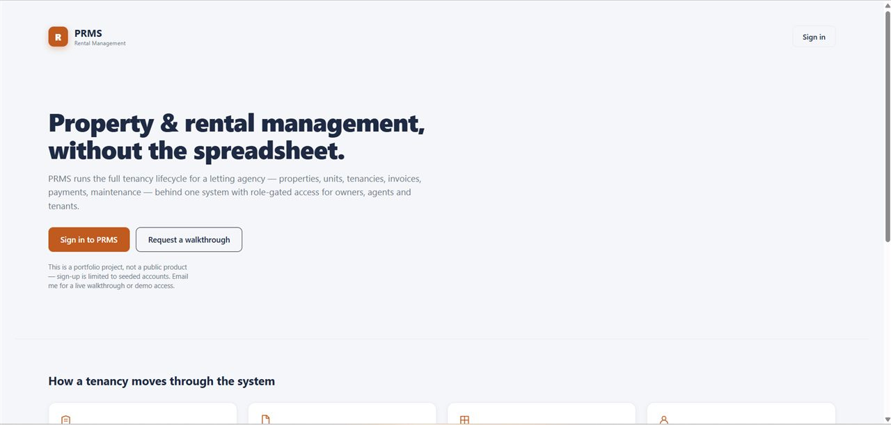

Property and Rental Management System
Multi-role platform for letting agencies · Laravel + Angular · 2026

REMS covers the whole tenancy: an owner registers a property, units are listed and approved, an agent drafts a tenancy, a tenant moves in, rent is invoiced on a billing cycle, payments are matched to those invoices, and the deposit is refunded when the tenancy ends. Maintenance tickets, vacate notices and agent commissions run alongside. That is about twenty REST resources, all behind token login with role-based permissions.
The domain is unforgiving in two ways. A unit let to two tenants at once is a legal problem, not a bug report. And money that does not reconcile is worse than having no system at all.
Making double-letting impossible, not just unlikely
The obvious fix is to check for an active tenancy before activating a new one. That check passes for both requests when two agents click at the same moment.
WHERE status = 'active'
Rejected by index
So the rule lives in the database instead:
CREATE UNIQUE INDEX uniq_active_tenancy_per_unit ON tenancies (unit_id) WHERE status = 'active';
A partial unique index lets a unit collect any number of draft and ended tenancies but allows exactly one active row. The second request now fails in the database however the two overlap, and the controller turns that into a clean 422. The rule holds even if someone later writes a script that skips my code.
Payments get the same care in code: an amount is refused unless it fits both the payment's unallocated balance and the invoice's outstanding balance. Invoice status is worked out from the allocations inside the same transaction, and when an allocation moves, both invoices are recalculated.
One deliberate choice: the backend uses Laravel's query builder rather than
Eloquent, with only User and Role as models. I wanted
explicit SQL and no surprise N+1 queries. The cost is real (no relationships, no
casts, some repeated validation), and it is a trade I would revisit on a bigger team.